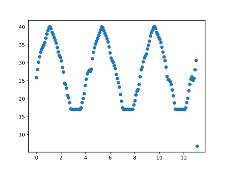
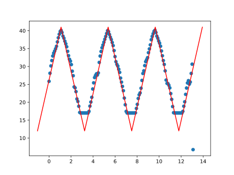

When a computer is in "sleep" mode, its power light might take on a state between the usual off and on to show that. On the Dell Latitude E6410 laptop, the power light continuously glows blue when the laptop is fully on, but smoothly cycles between off and on during sleep. This is often called a "breathing" pattern, and I wanted to measure its exact trajectory.
light.mp4ffmpeg -i light.mp4 -vf 'signalstats,metadata=print:file=stats.txt' -f null -
-i light.mp4 makes light.mp4 the input file.
signalstats is a "filter" (-vf) that takes statistics of the image for each frame, which will include a very useful YAVG.
metadata=print is another "filter" that shows all metadata for each frame, which will include a very useful pts_time.
file=stats.txt sends the statistics and metadata to stats.txt.
-f null - confirms that this command shouldn't convert light.mp4 into another video, but just give us the text file.from matplotlib import pyplot as plt
times: list[float] = []
brights: list[float] = []
current_time: float = 0.0
with open("stats.txt", "r") as f:
for line in f:
if "time" in line:
current_time = float(line.strip().split(":")[-1])
elif "YAVG" in line:
times.append(current_time)
brights.append(float(line.strip().split("=")[-1]))WINDOW: int = 10
brights = [sum(brights[i:i + WINDOW]) / WINDOW
for i in range(0, len(brights), WINDOW)]
times = times[::WINDOW]
Exercise for the reader: do it more concisely with NumPy.times = [t / 4 for t in times]
plt.scatter(times, brights)
plt.savefig("brights.png")
This looks like a bottom-clipped triangle wave. Heavily eyeballed, the period is 4.28 s, and the amplitude is 29 units of Y.
triangle_x = [-1.05 + 2.14 * i for i in range(8)] triangle_y = [12, 41] * 4 plt.plot(triangle_x, triangle_y, c="red")
